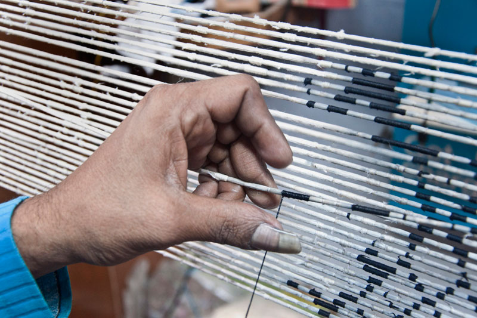

______
Based on the markings, two people begin tying
the areas that form some part of the pattern.
The parts that are tied will not be exposed to
the dye. In this way, only the areas that have
the first color will get dyed. When the threads
are soaked in the dye, the lightest colours are
dyed first and the dark colors are dyed in
the end.
This is to optimise the amount of tying needed
and also as to protect the light colours as they
can't be dyed over darker colours.
In this animation, the pattern has been enlarged
for better visibility. The actual motif is much
smaller and the tying, way more intricate.
